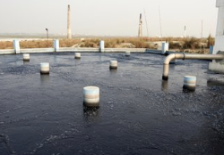
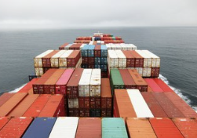

우리가 보고, 숨 쉬고, 먹고, 마시고, 만질 수 있는 모든 것은 근본적으로 화학 물질입니다. 인간 자체도 화학물질로 만들어졌습니다! 물론 좋은 요소도 있고 나쁜 요소도 있습니다만, H&M은 나쁜 요소들이 인간이나 환경에 해를 입히지 않도록 하고자 합니다. 그렇다면 무엇이 해로운 화학 물질일까요? 바로 잔류성, 생물 축적성, 유독성, 발암성, 돌연변이 유발성, 내분비 교란성 또는 생식 독성 물질들입니다.
화학 물질 체크리스트
의류를 세탁, 염색 및 프린팅할 때, H&M의 공급업체들은 당사의 화학 요건을 충족해야 합니다. 이 요건은 보통 업계에서 정한 규정보다 더 엄격합니다. 핵심은 유해 화학물질이 H&M에서 사용되거나 당사 제품에서 발견되면 안 된다는 것입니다. H&M은 1995년에 화학물질 제한 목록을 작성한 최초의 패션 회사 중 하나였습니다. 그 이후로 이 목록은 계혹 업데이트되어왔습니다. H&M은 공급업체가 이를 준수하도록 정기적인 검사(매년 수천 건)을 수행합니다.
H&M은 가능한 한 최고의 화학물질을 선택하기 위해, 선별된 화학(Screened Chemistry)이라고 불리는 방법을 채택했습니다. 당산의 목표는 이 방법을 통해 디자인 단계에서부터 유해 물질을 제한하는 것입니다.
비닐봉투 사용을 꺼리신다고요? H&M도 마찬가지입니다. H&M 매장에 들어오시면, 비닐봉투를 볼 수가 없습니다. 모두 종이봉투로 교체했기 때문입니다. 그 외 오가닉 코튼이나 재활용 폴리에스터로 된, 재사용이 가능한 귀여운 쇼핑백도 준비되어 있습니다. 그러나 온라인 주문이나 생산지에서 매장으로 의류를 운반할 때는 여전히 비닐 포장을 사용합니다. 이것도 곧 바꿀 계획입니다. 2025년까지 H&M에서 사용하는 비닐 포장은 재사용 및 재활용이 가능하거나 퇴비로 사용할 수 있게 될 것입니다.
H&M은 완전한 순환 및 재생 가능한 여정을 이어나가며, 모든 라벨과 포장을 바꾸는 방법을 탐구하고 있습니다. 여기에는 행택과 선물상자부터 영수증과 운송 상자까지 모든 것이 포함됩니다. 또한, 소재 공급 방법, 포장지 생산 방법, 사용 후 처리 등에 대해서도 조사하고 있습니다.

운송은 전체 온실가스 배출량의 2~3%를 차지하지만, 여전히 개선의 여지가 있습니다. 우리가 할 수 있는 가장 지구 친화적인 방법으로 제품을 운송하기 위해, H&M은 두 가지 흥미로운 협력과 연합에 동참했습니다.
세계 최대 운송 회사 중 하나인 Maersk는 탄소중립 해양 제품이라 불리는 것을 발명했습니다. 이 제품은 화석연료를 대체하여 해양 운송 시에 배출되는 배기가스를 줄일 수 있는 바이오 연료 블렌드입니다. H&M은 해상 운송 의존도가 높으므로, 이는 매우 흥미로운 소식입니다.
경로 연합(Pathways Coalition)의 경우에는 Scania, E.ON 및 Siemens와 힘을 합쳐 2050년부터 무화석연료 상업 수송을 위해 노력하고 있습니다. 더불어 H&M은 이것이 가능하다고 결론짓는 보고서를 발표했습니다! 본 보고서는 당사가 자체적으로 탄소 배출을 줄이는 데 도움이 될 것이며, 이에 영향을 받아 정치인과 다른 기업들이 행동에 나서길 바랍니다. 이 목표를 달성하기 위한 솔루션으로는 더 스마트한 물류, 차량의 전동화, 및 바이오 연료 등이 있습니다. 노선 및 부하 관리를 개선하는 것만으로도 도로 운송으로 인해 배출되는 CO2 배출량을 20% 가량 줄일 수 있습니다.